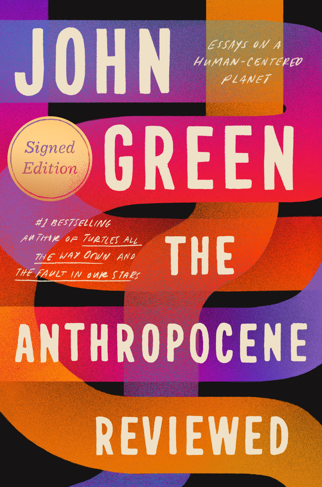

The Anthropocene Reviewed: Essays on a Human-Centered Planet
- Read on 2023-03-15
- Rating: ️️️️️
- Format: 🎧 (10 hours 42 minutes)
A book of essays, formed as reviews of various aspects of the human existence here on earth. The reviews are well written, and at times humorous and contemplative. This review is none of those. If you like John Green, you’ll likely enjoy this book.
- Prior: This Hallowed Ground
- Next: The Blade Itself